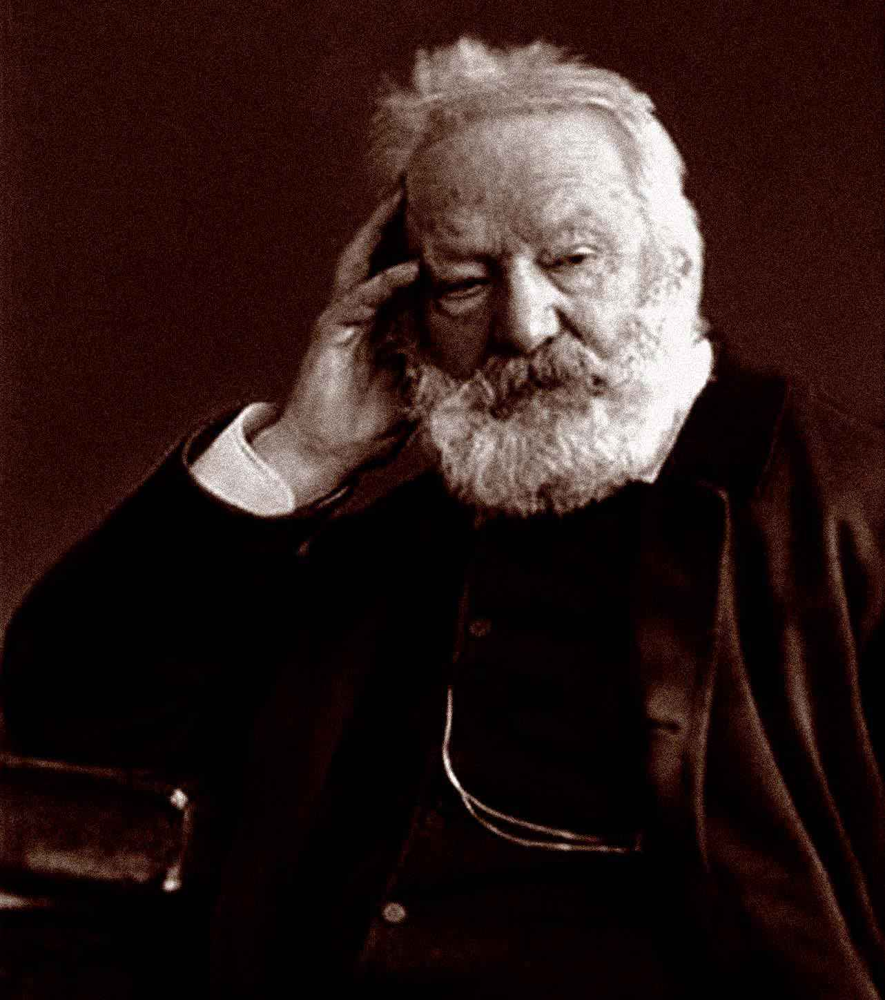

雨果（1802—1885）
法国浪漫主义作家，十九世纪前期浪漫主义文学运动领袖。雨果几乎经历了十九世纪法国的一切重大事变，1841年被选为法兰西学院院士。一生写过多部诗歌、小说、剧本，各种散文和文艺评论及政论文章。代表作有《巴黎圣母院》《悲惨世界》《笑面人》《克伦威尔》等。
长篇小说《悲惨世界》是一部《奥德赛》式的伟大史诗，一部悲天悯人、充满人道主义精神的不朽之作。
译者
李丹（1901—1977），湖南长沙人。1921年赴法国里昂音乐学院学习小提琴，对法国文学产生浓厚兴趣。1928年学成回国。先后在云南大学、云南师范大学、云南艺术学院任教。和妻子方于一起完成了《悲惨世界》的翻译。
方于（1903—2002），江苏武进人。1921年到法国里昂大学攻读法国文学，同时师从里昂音乐学院玛黛依斯夫人学习声乐。1927年学成回国。先后在东方语言专科学校、中法大学、昆明师范学院、云南艺术学院任教。译著有《西吟诺》《诗人海涅的爱》《毋宁死》《克里斯丁》等。